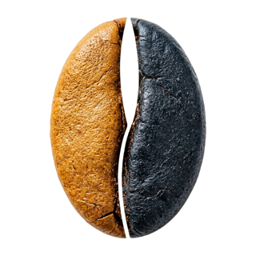
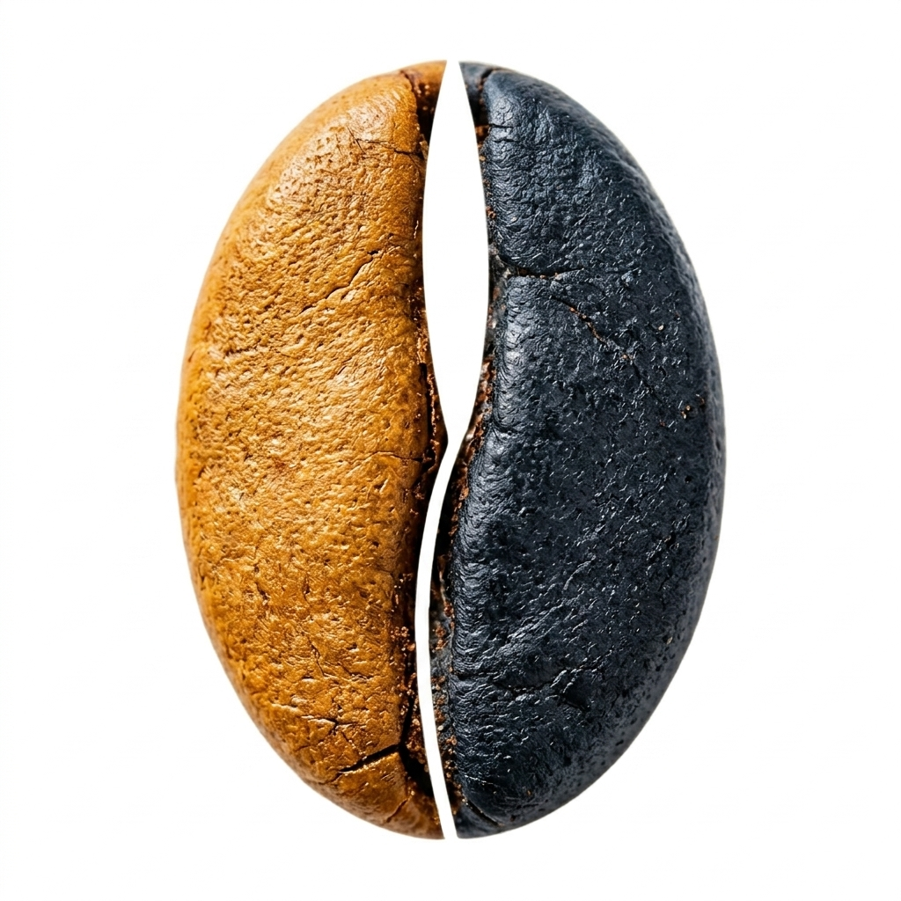

从一台烘焙机开始
把生豆、烘焙、杯测、出杯放在同一个空间里，让客人看见一杯咖啡从哪里来，也让村里的闲置空间有了新的香气。

蓝珀咖啡浙江绍兴 · 富盛镇上旺村
蓝珀咖啡·旺咖工厂店从上旺村出发，把绍兴的山水、村路、青石板和创业日常，做成一杯可到达、可停留、可带走的乡村咖啡体验。
THIS WEEK
VILLAGE STARTUP
旺咖想做的不是“路过拍照就走”的店，而是一个能让年轻人、骑行的人、带孩子来的家庭、对咖啡好奇的新手，都愿意停半天的村里据点。
把生豆、烘焙、杯测、出杯放在同一个空间里，让客人看见一杯咖啡从哪里来，也让村里的闲置空间有了新的香气。
骑车、自驾、摩托都可以在这里补给：喝一杯、盖一章、歇一会儿，再去村里走一圈。
每周固定开放工厂、手冲课、拉花课和社群杯测，预约人数会变成备料清单，少一点复杂，多一点踏实。
SHAOXING TOUCH
这里有会稽山的青绿、乌篷船的水声、老街青石板的温润，也有村里创业者的热气。蓝珀把这些绍兴元素收进体验里：不是做成景点，而是做成一天里的细节。
DAYTIME LOOP
时间尽量放在白天，适合家庭、朋友小队、骑行自驾和临时起意的绍兴周末。
BOOKING
选择项目、人数和联系人，页面会自动生成可发给主理人的报名信息。门店提前两天知道人数，就能准备熟豆、牛奶、打卡章卡、杯测杯和体验席位。
COUNTRY ROUTE

路线不用复杂：从城市开到富盛镇，进上旺村文化产业园，停在旺咖工厂店。喝完咖啡，沿村路看山、看田、看风从树影里过去。关键是让人觉得，来一趟很值得。
VILLAGE PASSPORT
把“喝咖啡”变成一段可以完成的任务：补给、看工厂、村里走一圈、路线合作。每点一下就是一枚电子章，也可以作为线下章卡玩法的雏形。
MAKE IT PLAYFUL
到店先补给，再慢慢选择今天要完成哪几枚章。这个玩法适合做小红书打卡、骑行社群合作，也适合周末亲子任务卡。
AROUND WANGKA
先到工厂店喝咖啡、盖章、休息，再按心情选择茶园、村史、宋韵遗址或轻户外。周边不做拥挤打卡，适合慢慢走、慢慢看。
旺咖冰美式补给 → 工厂参观/盖章 → 上旺村慢走 → 带一袋挂耳回家。
上午村路骑行 → 旺咖午后休息 → 御茶村茶园/抹茶体验 → 傍晚回城吃绍兴菜。
拉花体验 → 咖啡渣手作 → 上旺精神陈列馆 → 村里拍照，节奏慢一点。
VISIT
浙江省绍兴市越城区富盛镇上旺村文化产业园
主理人微信：sandlabs